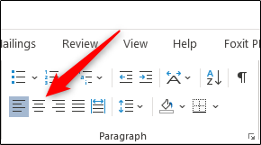
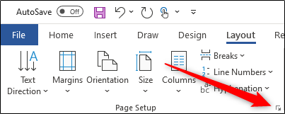
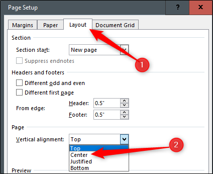
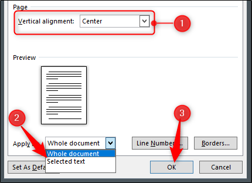

Microsoft Word comes equipped with a tool that allows users to align text both vertically and horizontally, giving you complete freedom for determining the position of text in a Word document. Here’s how it all works.
Horizontal alignment, also known as centered alignment, positions the text evenly between the margins on either side of the page. This tool also allows you to be selective with the text you align horizontally, giving you more control over what you can do to your document.
To align text horizontally on a page, highlight the text you want to center. Next, click the “Center Alignment” icon in the “Paragraph” group of the “Home” tab. Alternatively, you can use the Ctrl+E Keyboard Shortcut.

Your text will now be horizontally aligned. If you don’t already have text typed, it’s also an option to select the center alignment option before entering the text. It’s all up to you.
As you’ve probably guessed, vertical alignment positions the text evenly between the upper and lower margins of the page. You won’t notice a difference in the text alignment if you use it on a page that’s already full of text.
To see any real difference, try enabling the horizontal text option before inputting the text in your document.
To align text vertically on a page, head over to the “Layout” tab and select the small icon in the bottom-right corner of the “Page Setup” group.

This opens the “Page Setup” dialog box. Select the “Layout” tab and then click the arrow next to “Vertical Alignment” in the “Page” section. A selection of vertical alignment options will appear. Go ahead and click “Center” (or choose another option that better suits your requirements).

Your text will now reflect the selected vertical alignment option.
What if you only want to align specific text in the document vertically? There’s also an easy way to make this happen.
First, highlight the text you want to align vertically. Once selected, head back to the “Layout” tab of the “Page Setup” dialog box. Next, choose the desired vertical alignment type, open the drop-down menu next to “Apply To,” select “Selected text,” and then click the “OK” button.

The selected text will now reflect the selected vertical alignment option.